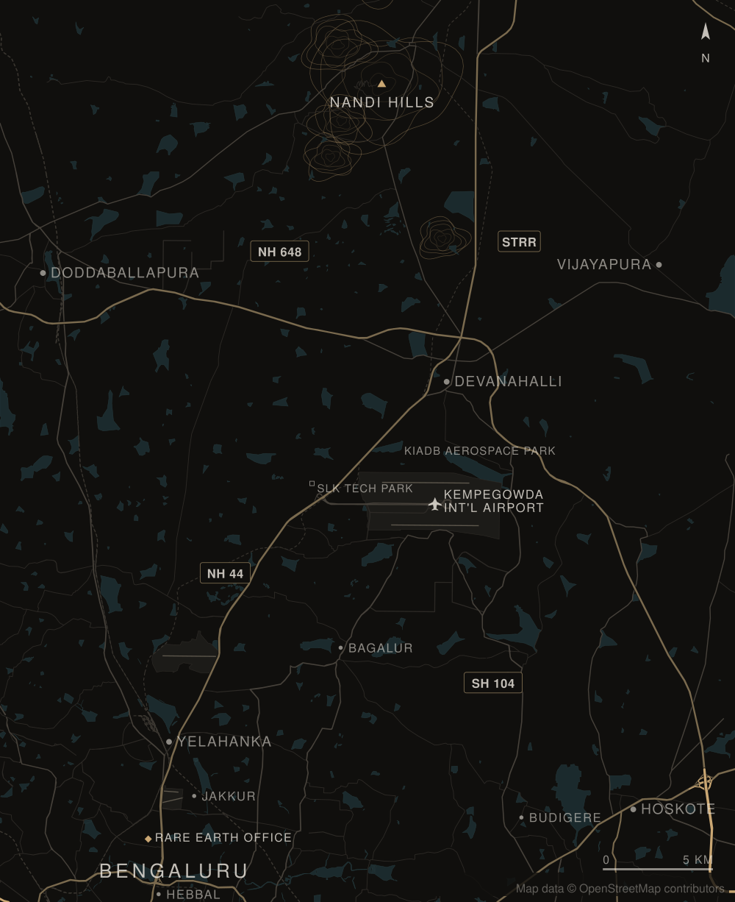

Premium plots in a green, gated neighbourhood near Yelahanka.
Sold out · Singanayakanahalli, YelahankaGreen, connected, quietly appreciating.
Tranquility at Singanayakanahalli brought 24 gated plots to a leafy pocket of Yelahanka, and every one has now found its owner. It's well connected to the city and the airport, and sits next to an industrial corridor, which supports strong long-term appreciation.
Twenty-four sites,on 28 ft roads.
Rendered from Tranquility's layout drawing: 24 sites on about 1.19 acres, off a main road, with 28 ft internal roads. Nine sites are 30 × 40 ft, six are 30 × 50 ft and nine are individually shaped. Zoom in to read every site number.
Personallyhandled.
Every plot at Tranquility is now sold. This is how our team took each owner from viewing to registration, and how we work at Montira and Athena today.
- Private viewing
We host you on site at Singanayakanahalli and walk you through the community, without any pressure.
- Documents
We share the documents for the plot you choose and answer every question about them.
- Bank loan
If you are taking a home loan, we help you with the paperwork your bank asks for.
- Registration
The plots were ready for registration, so each owner could register as soon as they were ready.
A leafy pocketof Yelahanka.
Tranquility is at Singanayakanahalli, just off Doddaballapur Road (SH-9) north of Yelahanka. Colleges such as BMSIT and Nitte Meenakshi, schools such as VIBGYOR and Stonehill, and Yelahanka New Town are a short drive away, and NH-44 to the airport is about 7 km.


✦ Getting around
- Doddaballapur Road (SH-9)About 400 m
- Rajanukunte station, a planned suburban rail terminusAbout 4.5 km
- NH-44 (Ballari Road)About 7 km
- Yelahanka metro station (Blue Line, under construction)About 8.5 km
- Yelahanka Junction railway stationAbout 8.5 km
- HebbalAbout 17.5 km
✦ Schools & colleges
- VIBGYOR High, YelahankaAbout 2.5 km
- BMS Institute of Technology & ManagementAbout 3 km
- Presidency School Bangalore NorthAbout 3.5 km
- Nitte Meenakshi Institute of TechnologyAbout 4.5 km
- Stonehill International SchoolAbout 5 km
- Mallya Aditi International SchoolAbout 6 km
✦ Work
- Rail Wheel Factory and Yelahanka Industrial EstateAbout 5.5 km
- Karle Town CentreAbout 15 km
- Bhartiya CityAbout 15 km
- Manyata Tech ParkAbout 16 km
- KIADB industrial areas, DoddaballapuraAbout 18 km
✦ Hospitals
- Government Hospital, RajanukunteAbout 4 km
- Krishnadevaraya HospitalAbout 5.5 km
- Manipal Hospital, YelahankaAbout 9 km
- Sparsh Hospital, YelahankaAbout 9 km
- Aster CMI Hospital, HebbalAbout 12.5 km
Distances are approximate road distances from the site, from OpenStreetMap routing (October 2026). Defence land around Yelahanka makes some roads much longer than the straight-line distance. The airport metro line and the suburban rail line are under construction and not yet open. Names of other developments are given only to describe the area.
Singanayakanahalli,Yelahanka.
A green, gated neighbourhood near Yelahanka, well connected to the city and the airport. Ask us for directions and we will meet you on site.

Singanayakanahalli, Yelahanka
- TranquilitySinganayakanahalli · Yelahanka
- Other Rare Earth communitiesSelect one on the map to visit it
- Rare Earth officeSahakarnagar, Bengaluru
Seen at Montira,our flagship.
These photographs are of Montira, our villa-plot community at Nandi Hills, not of Tranquility. They show the care we put into the land we develop: roads, planting and finish.


Tranquility, on paper.
The layout plan, drawn from Tranquility's layout drawing. Indicative; visit with us to see the land itself.
Good questions,straight answers.
Anything else you would like to know about Tranquility?
Where exactly is Tranquility?
Tranquility is at Singanayakanahalli, in a leafy pocket of Yelahanka. It is well connected to the city and the airport, and sits next to an industrial corridor.
Is anything still available at Tranquility?
No. Tranquility is sold out: all 24 sites have found their owners. Montira at Nandi Hills and Athena Phase II at Devanahalli are selling now.
What sizes were the plots?
Tranquility has 24 sites: nine of 30 × 40 ft, six of 30 × 50 ft and nine individually shaped.
Is Tranquility a gated community?
Yes. Tranquility is a gated community of premium residential plots.
How does buying a plot work?
One team takes you from private viewing through documents and bank loans to registration. That is how every Tranquility owner bought, and how we work at Montira and Athena today.
Are the pictures on this page of Tranquility?
No. The layout plan is rendered from Tranquility's layout drawing and is indicative. The photographs of Montira show our flagship community at Nandi Hills, and the airport and metro pictures are illustrative stock photographs of Bengaluru. None of them are photographs of Tranquility. Ask us for the drawing itself, or visit the site with our team.
How do I reach your team?
Send us a message on WhatsApp, call +91 88841 50025 or use the form on this page, and our team will be in touch personally.
Sold out,with thanks.
Every plot at Tranquility has found its owner. If you are looking for land now, Montira at Nandi Hills and Athena Phase II at Devanahalli are selling, and our team will be glad to show you around.
- Call
- Writeinfo@rareearthprojects.com
- WhatsAppMessage us directly
- SiteSinganayakanahalli, Yelahanka
- OfficeRarearth Projects Pvt. Ltd., No. 2385, 2nd Floor,
Next to Cauvery Public School, 60 Ft Road, E Block,
Sahakarnagar, Bengaluru 560092
Talk to us
Share a few details and our team will be in touch personally.